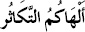

Vahdet ve Kesret

“Çoklukla övünmek sizi oyaladı!”
Tekâsür Suresi, 1. ayet
Ayetlerin Çevirisi:
1. “Çokluk onuru sizi oyalar...”
2. “Öyle ki, kabirleri ziyarete kadar bu sürdü...”
3. “Hayır! Düşündüğünüz ve sandığınız gibi değil, yakında göreceksiniz...”
4. “Hiçbir şekilde düşündüğünüzle alakası yok! Yakında mutlaka göreceksiniz!”
5. “Hayır düşündüğünüz gibi değil, ilmel yakin olarak bilirseniz...”
6. “Ve ant olsun o cehennemi mutlaka görürsünüz...”
7. “Sonra O’nu elbette aynel yakin göreceksiniz...”
8. “Ve sonra yemin olsun ki her türlü nimetten mutlaka sorulacaksınız...”
Surenin Düşündürdükleri
1-2. ayetler:

- “Elhakümüt tekâsür.”
K-S-R kökünden gelen bu kavram, birçok mealde “çok olanla övünme” biçiminde çevrilir. Ve genel mantığı bu şekilde örtülür.
Bu çeviri, kavramın işaret ettiği hakikati örtmektedir.
Bu kavram, vahdet kavramının zıddı olarak göz önüne alındığında, taşlar yerine oturacaktır. Vahdet, ahadiyetten gelen, teklik şuur ve bilincini yansıtan bir kavram olmakla beraber, birleştirici ve pozitif yöndedir.
Kesret ise, teki parçalama, çoğaltma ve aslında “başkalarında da olan şeylerin, yalnız sizde oluşu gibi sevinmedir.”
Bu noktada, Arap edebiyatının önemli isimlerinden şair el-A’şa, Divan’ında şu beyitlerde kavramı tam anlamında kullanmıştır:
Benim taşlarım onlarınkinden çok değildir.
İzzet, insanın ellerindekini çok görmesidir.
Kavram çok sayıda çakıltaşı anlamına gelir.
Aslında hepsi aynı olan bu çakıltaşlarının kendilerindekiyle üstünlük taslamalarıdır. Ve aslında hepsinin aynı olduğu şuurundan kopmak suretiyle, kendilerini “çokluk âlemine entegre edebilme adına” ürettikleri hezeyanların, kavram karmaşasının genel adıdır tekâsür.
Zıddı olan vahdet kavramı ise; eşsizlik, yalnızlık, teklik anlamına gelir. Bitişik olmak, bütünleşmek, iç içe olmak, eşi benzeri ve dengi bulunmaması, cins veya bir tür içinde olmak, bölünme kabul etmediğinden bir olanlar gibi anlamlar ihtiva eder. (Ragıp el Isfehani, Müfredat, “V-H-D” maddesi.)
İnsan yaratılışı gereği, vahdetten kesrete doğru yaratılmış, kendisinden ise; kesretten vahdete doğru hareket etmesi istenmiştir.
Muallakat-ı Seba (vahiy öncesi Kâbe duvarına asılan şiirler) şairlerinden Nabiğa, beyitlerinde vahdeti kendi dönemi içindeki anlamıyla bütünleştirir:
Sanki bineğim, zaman bizi bitirdikten sonra,
Kadri yüce vahad/tek dosta götürdü...
Halk içinde ise, diğerlerinden hiçbir farkı olmadığı halde ve hatta elindeki övündüklerinin de diğer insanlardan farkı olmamasına rağmen, çokluğun seyir ve coşkusunu talep eden, bu alanda kalmayı yeğleyen kimselerin genel hali için tekâsür demek doğru olacaktır.
Tekâsür, vahdetten kesrete varıp, oraya hapsolmuş bedenlerin ürettiği bir algıdır. Yani, insanı sevme şuurundan bihaber aşksızların divanelik halidir.
Dolayısıyla, varlık âleminin vahdet bilincine erişemeyenlerin, bu anlamda halk edilen seyre tabi olamayacağı; aksine, “kendisini ötekilerden farklı görme hastalığının” ürettiği, mal artırma, mülk artırma ve mal mülk çokluğuyla övünme psikozuna işaret eder. Ve Kuran, bu durumun bir oyalanma olduğuna işaret ederken, oyalanma olmayan durumu; “vahdet bilinciyle seyretmek” biçiminde tanımlar.
Ve bu bilinçten yoksun olan “kesret ehlinin” bu eylemlerini, kabirleri ziyarete kadar sürdüğü belirtilmektedir. Bu deyim, ölüme işaret etmektedir...
3-4. ayetler:
Ayetlerde geçen “kella “ ifadesi, bildiğimiz anlamda bir azarlama yaklaşımı ihtiva etmektedir. Bu yaklaşım gereği, “Hayır, öyle düşündüğünüz gibi değil, pek yakında göreceksiniz” şeklinde bir vurguyla; yeryüzünde cereyan edecek bir hadiseye dikkat çekilir. 4. ayetin başında da “sümme kella” diye geçen bu vurgulama, mutlak anlamda bir değişimin varlığından haber vermektedir.
Şu şekilde çevirmek mümkündür:
“Hayır, sandığınız gibi gitmeyecek, çok yakında göreceksiniz.”
“Asla öyle değil! Hayır! Bu iş böyle gitmeyecek! Çok yakında göreceksiniz.”
Yani:
“Ey kesret sevdalıları. Varlık âleminin o doğal ve fıtri ‘tekliğini/bütünlüğünü’ reddeden, kendisini özerk bir kimliğe büründürüp, bütünden kopartan; bu hayat ve seyr öyle sandığın gibi devam etmeyecek! Hayır, asla öyle değil, çok yakında göreceksin...”
Tekâsür ibaresi; şirkin başlangıç ilkesidir. Çünkü şirk maddesine göre; yeryüzündeki her şey Allah’a aittir. Ve tekâsür ehli, yeryüzünde tasarruf ve idare etme hakkına sahip olma iddiasıyla çıkış yaparak, şirk dairesindeki konumunu biçimlendirir.
5-8. ayetler:
5. “Hayır düşündüğünüz gibi değil, ilmel yakin olarak bilirseniz...”
6. “Ve ant olsun o cehennemi mutlaka görürsünüz...”
7. “Sonra O’nu elbette aynel yakin göreceksiniz...”
8. “Ve sonra yemin olsun ki her türlü nimetten mutlaka sorulacaksınız...”
6. ayette, cehennemi görme ibaresi bir şarta bağlanmıştır. İlmel yakin olarak bilme şartına bağlanmış bir cehennemi görme durumu söz konusudur. Halbuki, ahirette böyle bir şartın olması söz konusu olamaz. Hem de çok ilginç olan bir durum daha; ayetlerdeki sıralamayla ilgilidir. Önce cehennemi görüp, sonra nimetlerden sorulma; bu hadisenin yaşanacağı yeri gözler önüne sermektedir.
Yani, ilmel yakin olanlar, cehennemi görebilecekler, gördüklerine de “aynel yakin” olacaklar.
Yani özetlemeye çalışırsak:
- Kesri duyguların ürettiği algı mutlak anlamda hezeyan üretir.
- Mal mülk çoğaltma yarışında olanların sayısındaki artış, yıkımı, rezilliği artırır.
- Ve “cahim”, Tekâsür Suresi’nde zikredilen cehennem, yeryüzündedir.
- Bu cehennemi sadece “ilmel yakin” olanlar, yani kesin bir bilgiyle doğru ve yanlışı ayırabilenler algılayabilirler.
- Ve bu kesret yarışında başı çekenler mutlak anlamda yitirilmiş, yok olmuşlardır. Yaşam sandıkları gibi devam etmeyecektir...
Baktığımızda “cahim” gayet doğal bir biçimde faaliyettedir. Cahim, insanlığın yaşamına sefalet yağdırırken, bunun nedeni; mülkperestler olarak öne çıkar.
Nasıl mı?
• Dünyada 1 milyar insan açtır.
• Bunun akabinde, dünyada dolanan paranın %78’ini, dünya nüfusunun %0,7’si kontrol etmektedir.
• Dinmez savaşlar, silah ticareti, insanların bu sistem algısına karşı yükselteceği direnişi kırma adına, devletler eliyle piyasaya sürülen “uyuşturucu”, fuhuş ve fakirliğin getirdiği suçlardaki artış.
• Birilerinin göbeği şişerken, diğerlerinin açlıktan ve hastalıktan ölüyor olması.
İşte cahim budur.
Kuran’da, İbrahim Resul’ün atıldığı ateşi tarif ederken “cahim” kavramı kullanılır.
Cahim, yeryüzünde cereyan eden, kesret örtüsüne bürünmüş ellerce üretilmiş tahribatın genel adıdır.
Ve tekâsür ehlinin tekâmülüne hizmet eden bir araçtır...
Çözüm ise “öze dönüş”, yani kesretten vahdete seyretmektir...
Şimdi bu meseleyi ele alalım...